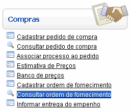
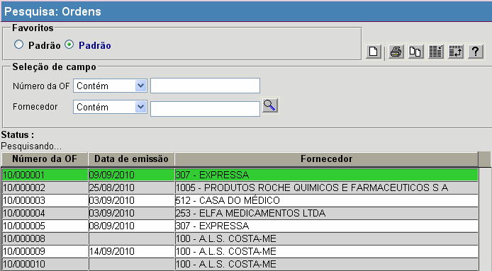

Consultar Ordem de Compra [ Voltar ]
Utilize esta tela para localizar e abrir ordens de
fornecimento registradas no sistema.
O formulário "Consultar
ordem de compra" encontra-se dentro do menu "Compras".

Ao clicar no formulário, o sistema exibirá a seguinte
tela:

1º
Passo: configure os filtros da pesquisa para localizar a ordem de
fornecimento desejada. Os filtros disponíves para
auxiliar a localização da ordem são:
- Número da
OF. Digite
neste campo caracteres do código da ordem de fornecimento para retornar
registros cujos códigos contêm o
conteúdo digitado.
- Fornecedor. Você pode selecionar aqui um
local solicitante específico.
À
medida que os filtros são preenchidos, os resultados são exibidos
automaticamente na tabela de resultados. Para abrir uma ordem
na tela "Ordem de
Fornecimento", selecione o registro desejado com um clique.
Ir
para o topo da página
|